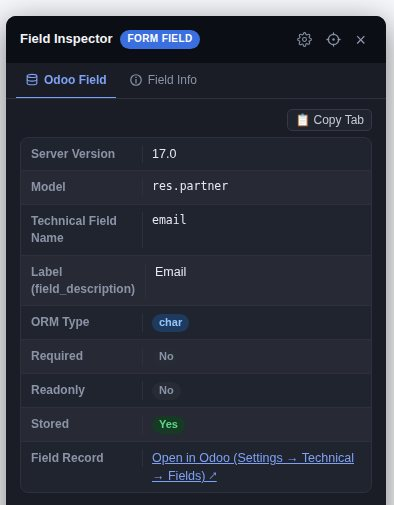

01Quick start
Install the extension, turn it on once, and you're inspecting. Everything below assumes that first step is done.
- Install — get it from the Chrome Web Store, or build from source: clone the GitHub repository, open chrome://extensions, turn on Developer mode, click Load unpacked and pick the folder.
- Open the popup — click the Field Inspector icon in the toolbar (pin it first if you like).
- Toggle Enable Inspector on. Detected fields get a subtle dashed outline on the page.
- Click any field's label (or a table column header) — the inspector panel slides in on the right.
- Toggle it off in the popup whenever you're done; normal page behaviour is fully restored.

The popup is deliberately small — just what you reach for constantly:
- Enable Inspector — the one toggle for the current tab.
- Detection modes — Form View and List View, so you can inspect only what you need.
- Highlight detected fields — the dashed outlines on the page.
- Copy format — Plain text or JSON for Copy All.
- Odoo Developer Mode, Show sensitive values and Intercept clicks — the three switches you'll occasionally flip mid-task.
- All settings — opens the complete settings page in its own tab (see section 14).
02Inspect a form field
Click a field's label, the input itself, a checkbox, a select, a textarea, a contenteditable region or an ARIA-labelled custom control. The panel opens with one tab per category of information, styled like Odoo's own notebook.
- Odoo Field tab (on Odoo pages, with Odoo Developer Mode on) leads with the live definition: the model, ORM type as a colour-coded pill, relation, required / readonly / stored state, help text, the selection options decoded to labels, and how the field is declared in the current view —
widget=,domain=,context=,invisible=and friends. - Server Version is read once per tab (for example
17.0) and shown in the same tab, feeding the version-correct deep links described in section 8. - Below the definition you get the field's State, its selectors, and a ready-to-paste view XML snippet —
<field name="email"/>— plus a direct Open in Odoo link to the field's own admin record under Settings → Technical → Fields. - The history chips right under the panel header are the last fields you inspected — click one to jump straight back to it without touching the page.
- Move the panel by dragging its header, jump to the real element with the crosshair button (it scrolls the page and flashes the field), and close it with ×, Esc, or a click anywhere outside the panel.

ir.model.fields data, how the field is declared in the current view, and where to click through to its admin record.On plain HTML pages (no Odoo), the same click gives you the Field Info, State and Selectors tabs instead — covered next.
03Field Info & Selectors — CSS selector and XPath
Two tabs answer the two questions developers ask most: what is this element? and how do I address it in a script?


- Unique by construction. Both values are generated so they resolve back to exactly this element — no guessing at brittle class chains for your test script or bookmarklet.
- Odoo View XPath. When the selector resolves into Odoo view XML, the panel relabels the value Odoo View XPath and adds a hint about scoping it to the field's parent when it appears more than once in the view.
- More attribute groups — Validation, Data Attrs, ARIA Attrs, Other Attrs — appear as their own tabs whenever the element has them.
04List columns & data cells
Tables and grids get the same treatment: click a column header (<th> or role="columnheader") or any plain data cell.


sale.view_order_tree, not the form view.- Headers describe the column itself: name, position, and a Table tab with the parent table/grid's size and identity.
- Data cells add the row/column position and the cell's text; on an Odoo list they trigger the same live field lookup as a form field, and the panel reports the list view's XML ID — not the form view's.
- Where the column renders an input, a Sample Input tab shows the control used in that column.
05Copying values
Everything the panel shows is copyable, in three granularities.
- Per-row copy buttons — every selector, XPath, value and snippet has a 📋 button beside it for just that one value.
- 📋 Copy Tab (top-right of every tab) copies everything currently visible in that tab as
Label: valuelines — ideal for pasting a bug report. - Copy All Information (the bar at the bottom of the panel) copies the entire panel — all tabs at once — in the format you chose in Copy format: Plain text or JSON. The same choice drives the popup's quick setting and the Settings tab.
- Redaction travels with the copy: secret-named field values are replaced with a redaction marker in every output unless you turn on Show sensitive values (see section 9).
06Field Finder — search the whole page
Rather than clicking around, open the Field Finder and search every field and column on the page at once — by label or by technical name, live as you type.

- Open it from the Options menu → Search Fields (see section 12).
- Results show the human label and, when known, the Odoo technical name — so you can search
partner_idor Customer and get the same row. - If an Odoo wizard (dialog) is open, the search automatically scopes to just that dialog's fields, so the surrounding form doesn't drown out the dialog you're actually working in.
- Picking a result selects it without touching the page — this is also one of the two safe ways to inspect a button (see section 7).
07Button inspector — what will this button actually do?
A dedicated Button tab tells you what an Odoo button will do before anyone presses it.

special= and confirm=, and the record it would act on.- Method — the Python method invoked (e.g.
action_save), or the Action it opens instead. special=built-ins (save,cancel,new…) andconfirm=the confirmation text it asks for first.- Record — the model and id the button would act on, as declared in the view.
- Buttons are never hijacked. A normal click on Save/Delete stays a real button click, because intercepting it could corrupt a workflow. Inspect buttons in exactly two ways: turn Intercept clicks off and click it (click-through mode), or pick it in the Field Finder — which selects it without pressing it at all.
08View Stack & version-correct deep links
A rendered Odoo page is the merge of a whole inheritance stack. The panel resolves which view you're really looking at — and links you to each layer.


- Version detection. The panel reads one fixed configuration key from your server, at most once per tab, and shows the version (
16.0,17.0, an Odoo Online build string …). - Version-correct links. On 16 and earlier the deep link uses the legacy
/web#model=…&id=…hash; on 17 and later it uses the/odoo/action-…route. If the version can't be read, both styles are offered with an explanation — never a silent guess. - View metadata only. The extension resolves view identities — ids and their XML IDs. It never downloads a view's source XML (
arch_db) and reads no record data through them.
09Click safety & sensitive-value redaction
The two defaults that make the inspector safe to use on production forms.
Intercept clicks (on by default)
- Clicks on detected fields are caught before the page sees them: no checkbox toggles, no dropdown opens, no value or focus state changes. The panel opens; the form doesn't move.
- Turn Intercept clicks off (popup, Settings tab, or the Options menu) for click-through mode: the panel still opens, but the click also reaches the page, so you can keep editing the form while inspecting it. This mode can change form data — that's your explicit choice, not the default.
- Disabling the inspector restores completely normal page behaviour, outlines and all.
Show sensitive values (off by default)

- Password inputs, hidden token/CSRF fields and other secret-named fields are detected and redacted everywhere the value could surface.
- The toggle lives in the popup, the Settings tab and the Options menu, and applies live — you never have to reopen the panel.
10Domain Builder — visual Odoo domains
Compose a search domain from the model's real fields, combine conditions, copy the result. Nothing is applied to records — it only generates the filter text.

- Open it from the Options menu → Domain Builder.
- Load Fields asks your Odoo server (
fields_get) — with Odoo Developer Mode on — so you pick from real labels, types and selection choices instead of typing blind. - Conditions and values stay in tab memory; they reach the clipboard only when you choose Copy, and are never sent anywhere else.
- Copy as a Python domain (
[('stage_id', '=', 'won')]) or JSON — paste into a test, anir.actions.act_windowdomain field, or a server action.
11Chatter Manager — read and search the chatter
Reclaim screen space, or turn an already-loaded chatter into a searchable reader. Entirely local — no network requests.

- Hide a form's chatter with one click while you work on the fields; disabling inspection puts the layout back.
- Expand it into a reader over messages already loaded in the page — search and filter by content, message type and author.
- Covers messages, internal notes, and tracked field changes (the "Field X was modified" entries).
- Everything stays in the tab: nothing is fetched, nothing is stored, and composer drafts are never read.
- The menu entry appears only when the current form actually has a chatter.
12Options menu & Recent Fields
While the inspector is enabled, a small floating gear sits at the bottom-right of the page. It's the hub for everything — no popup round-trip needed.

- Search Fields — the Field Finder (section 6).
- Domain Builder / Chatter Manager — the tools from sections 10 and 11.
- Recent Fields — reopen any of your last inspected fields; the panel's header chips do the same in one click.
- Instant toggles — Highlight Fields, Odoo Developer Mode, Show Sensitive Values and Intercept Clicks, each showing its current state.
- Copy Current Field — one-click copy of whatever is inspected, without touching the panel.
- Settings · Theme & Colors — the in-panel settings page (section 13).
- Disable Inspector — the popup-free way to switch everything off.
13Appearance — theme, accent and density
A gear in the panel header opens Settings right inside the panel: what you see is the panel restyling itself, live.

- Theme — Light, Dark, or System, which now repaints live when your OS flips between light and dark.
- Accent — six tested palettes; the popup mirrors your choice so the two surfaces never disagree.
- Density — Comfortable or Compact padding, applied everywhere in the panel.
- The same page also holds the behavioural switches: Highlight, Intercept clicks, Odoo Developer Mode, Show sensitive values and Copy format.
- Drag the panel by its header anywhere on screen — it re-anchors from right/bottom to left/top on the first drag.
14The Settings tab — everything in one real page
The popup stays deliberately small. All settings under Enable Inspector opens the complete settings in its own browser tab — also reachable from chrome://extensions or a keyboard shortcut.

- Sections — Appearance (theme/accent/density), Detection (Form View, List View, Highlight), Behavior (Intercept clicks, Show sensitive values, Copy format, Odoo Developer Mode), Debug, Auto-enable sites, and a Privacy summary.
- The preview is the real thing. It repaints as you change anything, so what you see is what the panel will look like.
- Two-way sync. Change a setting here and the popup updates immediately; change it in the popup and this page updates. Both read and write the same local storage — there is no "other" copy to get out of date.
- All settings persist across sessions in
chrome.storage.localand apply live to tabs where the inspector is already enabled.
15Auto-enable on your own site
Stop clicking Enable after every navigation: let the inspector start by itself on the one origin you actually work on.

- Opt in per site — tick Auto-enable on this site in the popup (or add an origin on the settings page). Chrome then asks for access to that one origin and nothing else; there is no blanket host permission.
- Exact matching — remembering
https://erp.example.comdoes not coverhttps://intranet.example.comorhttp://erp.example.com. Wildcards and pasted URLs containing credentials are refused before Chrome is asked. - Manageable — every remembered site is listed with a Remove button in both the popup and the settings tab; removing it revokes the Chrome permission too. If you revoke access yourself in
chrome://extensions, the stale entry is cleaned up automatically. - Local files excluded —
file://pages can't be remembered (browsers don't allow this kind of access), so the option is unavailable there. - With it off, the extension requests no host access at all.
16Debug mode — diagnostics on demand
When something looks wrong, turn on verbose logging and a live readout of what the extension currently believes.

?debug=1 is active for that page.- Per-page URL switch — add
?debug=1(or?debug=0) to a page's URL. The URL always wins over the saved switch, and it is never stored — it can't change a preference on any other page, and it can never enable the inspector by itself. - Persistent switch — flip Debug logging on the settings page when you want it for every page you open from then on.
- Output goes to the page's own console as verbose diagnostics, plus the live readout above.
17Privacy — what happens to your data
The short version; the full text lives in the privacy policy.
- No collection. No analytics, telemetry, crash reporting or accounts — the developer operates no server that the extension talks to.
- The one exception is opt-in and goes to your own server. With Odoo Developer Mode on (the default; toggle it off any time), clicking a recognized Odoo field sends only the model name and technical field name to the same Odoo server the page is already open on, over your existing session — never a field value, never a third party. The same applies to button lookups, the version key, view XML IDs and Domain Builder's Load Fields.
- Everything else stays local. Page content, selectors, chatter messages and domain drafts live in the tab; your preferences — and the optional list of auto-enabled origins — live in
chrome.storage.localand never leave your machine. - Permissions are minimal.
activeTab,scriptingandstorage, plus optional per-origin access only if you use auto-enable. Chrome does not show the broad "read and change all your data on all websites" warning for this extension. - Every claim above is verifiable in the open-source repository.
18Frequently asked questions
Does it work on pages that are not Odoo?
Yes. On any web page the panel shows the HTML facts of a clicked form field or table column — element, type, id, name, classes, placeholder, state, CSS selector and XPath. The Odoo-specific sections (ir.model.fields definition, view XML IDs, version deep links, buttons, Domain Builder field loading) only appear on pages served by Odoo, and only when Odoo Developer Mode is on.
Can clicking a field change my form data?
Not by default. Intercept clicks is on out of the box: the click is caught before the page sees it, so checkboxes never toggle, dropdowns never open and no value changes. You can deliberately switch to click-through mode if you want to keep editing the form while inspecting it.
Where does the Odoo field information come from?
From your own Odoo server. With Odoo Developer Mode on, the extension sends only the model name and technical field name to the same server the page is already open on, using your existing logged-in session, and shows the definition returned by ir.model.fields. Field values are never sent, nothing goes to a third party, and you can turn the mode off at any time.
Which Odoo versions are supported?
The panel reads your server's version (for example 16.0 or 17.0) and adapts: the "Open in Odoo" deep link uses the legacy /web#model= hash style on 16 and earlier and the /odoo/action- route on 17 and later, and Odoo Online build strings are handled too. When the version cannot be read, both link styles are offered with an explanation instead of a silent guess.
Where are my settings stored?
Locally, in chrome.storage.local inside your browser profile — including the optional list of sites you chose to auto-enable on. Nothing is transmitted to us or to anyone else. Removing the extension clears that storage.
Is Odoo Field Inspector free and open source?
Yes. It is free to install from the Chrome Web Store and the full source code is published on GitHub, so the privacy claims in this guide can be verified against the code.